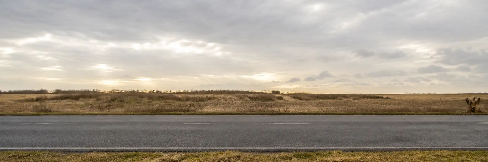
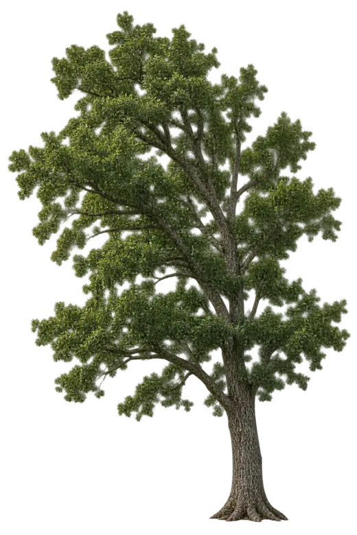

Displacement vs timex (m)
Family 7 · threshold + multistage
Schematic world · lightweight
Stopping distance with reaction delay
Constant velocity during the reaction delay; constant negative acceleration after braking begins.
The stopping sequence in motion
The sliders set the reaction and braking timing


Change the situation
The car maintains this velocity throughout the reaction delay.
Acceleration is zero until the driver begins braking.
The signed acceleration during braking is negative: a = −|a|.
Reaction phase
Braking phase
Same selected instant
Velocity vs time
v (m/s)
Acceleration vs timea (m/s²)
Velocity vs distancev (m/s) vs x (m)
Solved equations
Reaction delay adds distance without changing the braking time. Initial velocity affects the braking distance quadratically.
a = 0; v = v0 = 20.0 m/s
dr = v0tr = (20.0)(0.75) = 15.0 m
a = −5.0 m/s²; 0 = v0² + 2a db
db = v0²/(2|a|) = 20.0²/[2(5.0)] = 40.0 m
Combine the phases
tstop = tr + v0/|a| = 4.75 s
dstop = v0tr + v0²/(2|a|) = 55.0 m
Show all recurring problem families
Interactive roadmap
The recurring problem families
The highlighted family is the first completed interactive model.
Definitions, averages, and signsDistance vs displacement; average vs instantaneous quantities.
Constant velocityLinear position change with zero acceleration.
Constant acceleration with timeFind position or velocity after a stated interval.
Endpoint condition without timeStopping distance or final speed when time is absent.
Turnaround and returnDistinguish v = 0 from returning to the initial position.
Free fall and vertical launchConstant downward acceleration with several possible endpoints.
Threshold and decision problemsMinimum, maximum, “just barely,” and stopping-distance decisions.
Multistage motionReaction–braking or accelerate–cruise–brake sequences.
Meeting and chaseTwo position functions evaluated on the same clock.
Relative motionMotion as observed from another moving reference frame.
Two-dimensional projectilesIndependent x and y motion connected by one shared time.